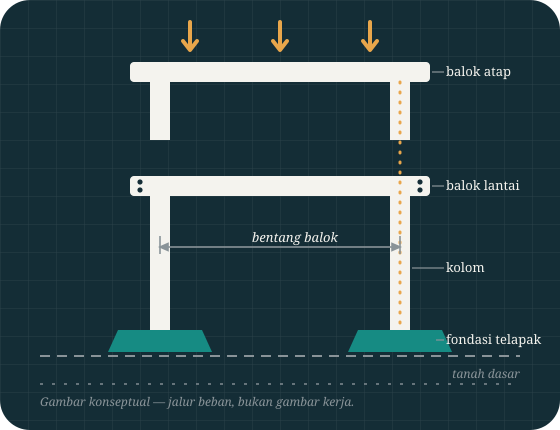

Lembar A-01 · Beranda
Struktur yang baik bisa dibaca — seperti gambar yang baik.
ZonaSipil menyusun pengetahuan teknik sipil layaknya satu set gambar kerja: setiap topik punya lembarnya, setiap angka punya garis dimensinya, dan setiap klaim bisa ditelusur kembali ke rumus atau potongannya.

Indeks
Daftar lembar
Satu set gambar selalu dimulai dari daftar isinya. Begitu pula platform ini — empat lembar utama, masing-masing menjawab satu jenis pertanyaan yang berbeda.
Struktur Beton Bertulang
Potongan balok dan kolom, daerah tarik dan tekan, serta kenapa posisi tulangan lebih menentukan daripada jumlahnya.
Buka lembar S-02Fondasi & Tanah
Ke mana beban berakhir: fondasi telapak, penyebaran tekanan, dan batas daya dukung tanah yang tidak bisa ditawar.
Buka lembar E-01Estimasi & Kubikasi
Volume beton dan berat tulangan dihitung dari geometri gambar — lengkap dengan rumus terbuka di samping kalkulatornya.
Buka lembar D-01Detail & Artikel
Selimut beton, jarak sengkang, dan tulisan teknis yang berangkat dari rumus — bukan dari slogan pemasaran.
Buka lembarMetode
Cara membaca platform ini
TAHAP / 01
Lihat gambarnya dulu
Setiap topik dibuka dengan gambar teknisnya — potongan, denah, atau diagram beban. Struktur dipahami dari gambarnya, bukan dari hafalan istilah.
TAHAP / 02
Hitung dengan rumus terbuka
Kalkulator di sini selalu berdampingan dengan rumusnya. Kamu bisa memeriksa setiap hasil dengan kalkulator tangan dan satuan yang sama.
TAHAP / 03
Pahami alasan detailnya
Artikel menjelaskan kenapa detail disusun begitu — sengkang rapat di tumpuan, selimut beton yang tidak boleh ditawar — agar keputusanmu punya dasar.
Alat · E-01
Hitung cepat: kubikasi satu balok
Versi ringkas dari kalkulator utama — cukup untuk memeriksa satu elemen saat membaca gambar. Untuk banyak elemen sekaligus, gunakan kalkulator lengkap di beranda produksi.
V = p × l × t
Prinsip rumah
Empat hal yang tidak kami tawar
Bukan janji pemasaran — ini aturan kerja yang bisa kamu periksa di setiap halaman.
Gambar digambar untuk konsepnya
Tidak ada stok dan tidak ada gambar tempelan. Setiap ilustrasi dibuat khusus untuk konsep yang sedang dijelaskan.
Rumus selalu terbuka
Alat hitung yang menyembunyikan rumusnya meminta kepercayaan buta. Di sini variabel dan asumsinya ditulis di samping hasil.
Konseptual diakui sebagai konseptual
Gambar atau hitungan yang disederhanakan diberi labelnya dengan jelas — tidak pernah menyamar sebagai dokumen desain.
Tidak ada angka pajangan
Tanpa statistik, testimoni, atau klaim otoritas yang tidak bisa ditelusur. Yang ditampilkan hanya yang bisa diperiksa.